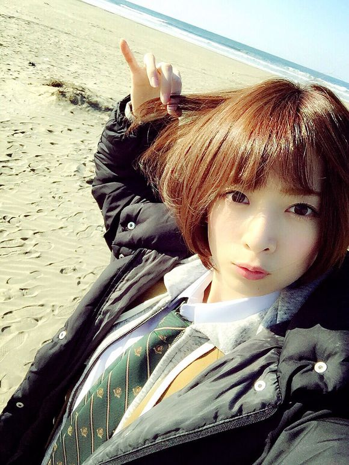
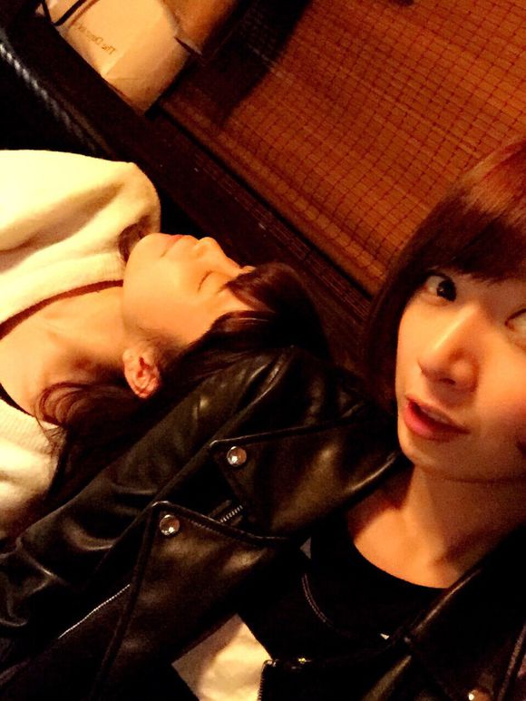

| 2015/03 15 Sun | 電波を探して3000里 |
（・３・）

（・３・）同じ顔（・３・）
命は美しい

ジャケ写は海で撮影したよ！冬の海！
夏より冬の海の方が好きかも！
MVも公開されたね！
最近は色んな音楽番組の収録に参加させてもらってるから是非ぜんぶみてほしい！笑
今回はとくにダンス頑張ってるから楽しみ方がたくさんあると思うー！！
最近はよく仕事終わりにメンバーとご飯に行くことが多いよ（・３・）

まいまいがご飯食べ終わっておねむになってしまったとき
明日発売の週刊プレイボーイに
わたしのソログラビアが掲載されますー*\(^o^)/*
実はプレイボーイは
わたしのソログラビアデビューの雑誌で、思い出深い雑誌なんです！
たぶん、今までプレイボーイでのわたしのグラビアを全部チェックしてくれている人は
「あれっ？」と気付く所があるの！
分かったら教えてください*\(^o^)/*笑
とっても、今のわたし！って感じ！
なかなか撮らないシチュエーションでも撮ってもらえて面白かったー♪
そして！同じく明日発売のヤングマガジン！
七瀬と表紙＆グラビアをさせてもらいました！
表紙はわたしにとっては珍しいピンクの衣装、、、( ･⊝･ )！！
貴重です。そしてとても春らしくかわいく撮っていただきました、、、！
両方とも、是非みてね*\(^o^)/*
あ、755ひっそり再開しました！
ひっそり更新してるのでひっそりみてください♪
コメント(1473)
2015/03/15 19:36